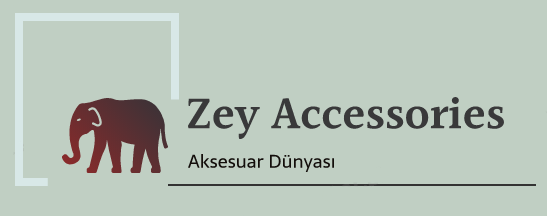

|  |
|---|
Anasayfa | Küpe | Kolye | Bileklik | Yüzük | Gözlük |
|
Takının, bir estetik obje olarak ele alınması ve başlangıcından günümüze kadar estetik obje kavramına yüklenilen anlam bağlamında değerlendirilmesi önem taşımaktadır. Yalın bir somut var olan takı, suje tarafından beğenilen güzel bulunan bir tavırla kavranıldığından takı yalın bilgi objesi olmaktan çıkmakta ve estetik objeye dönüşmektedir. Arkeolojik ve antropolojik araştırmalar ilk sanat örneklerinin, beden süslemesiyle ilgili veriler olduğunu ortaya koymaktadır. Bu çalışmada “estetik bir obje olarak takı” konusu ele alınmakta ve takı analitik bir yaklaşımla değerlendirilmektedir. Ben de bu tarihi serüvenden ilham alarak sizler için en modern takılara ulaşacağınız bu siteyi hazırladım... Daha fazla araştırma için aşağıdaki bilgilendirmeden yararlanabilirsiniz... |